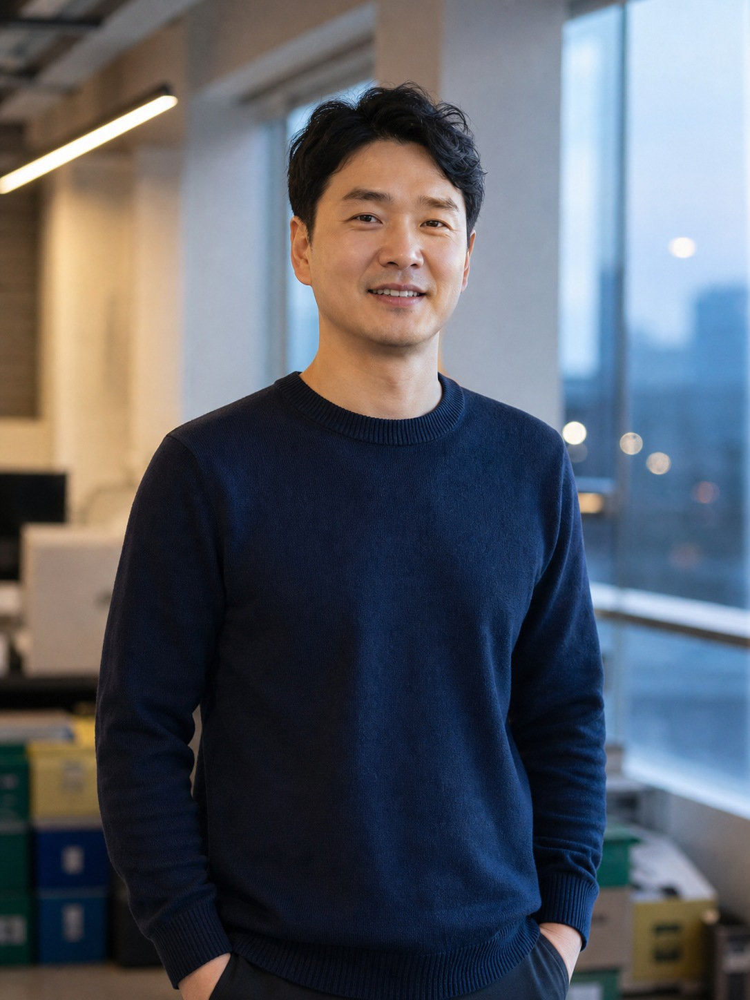
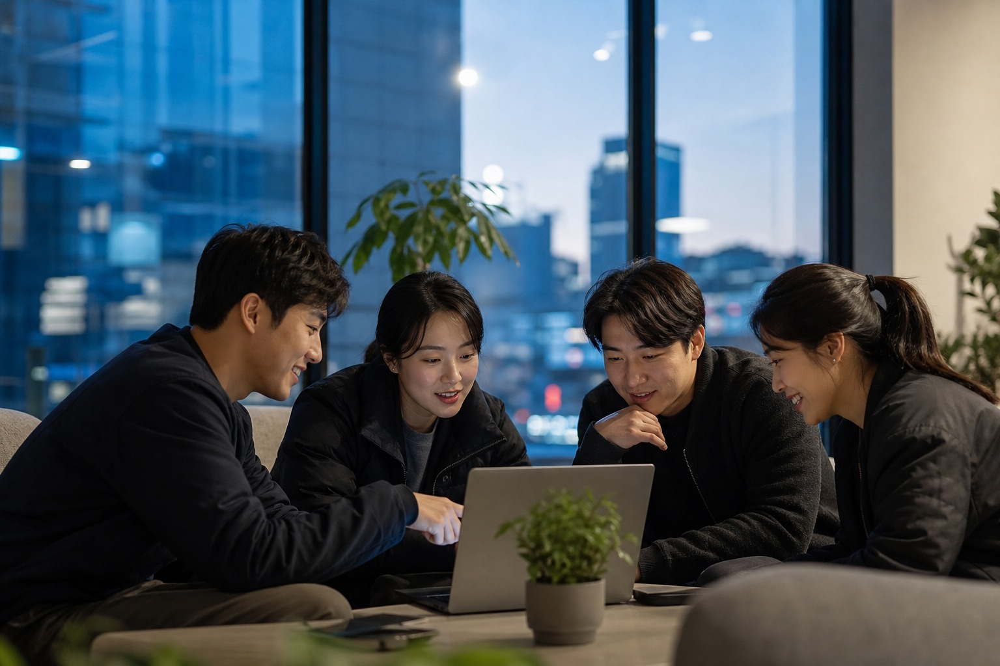
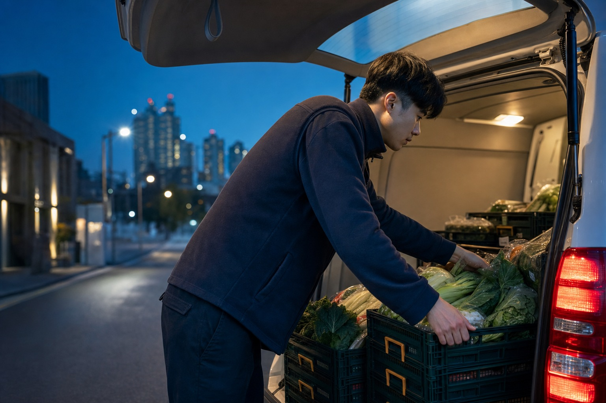
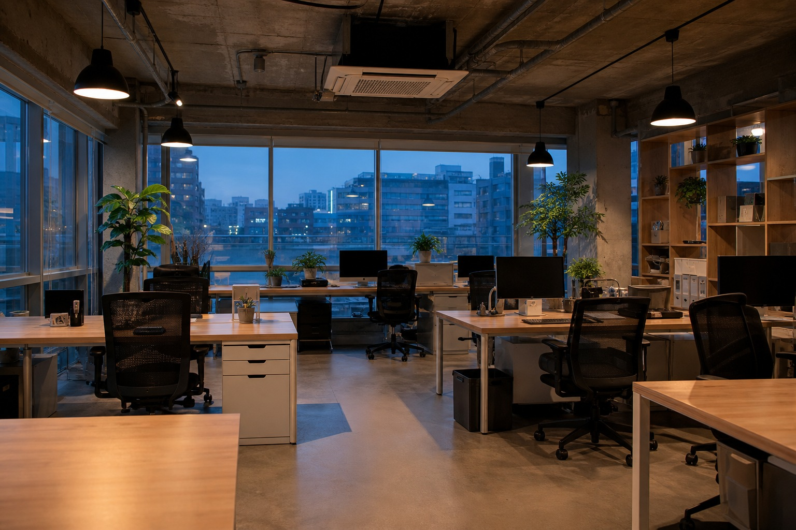
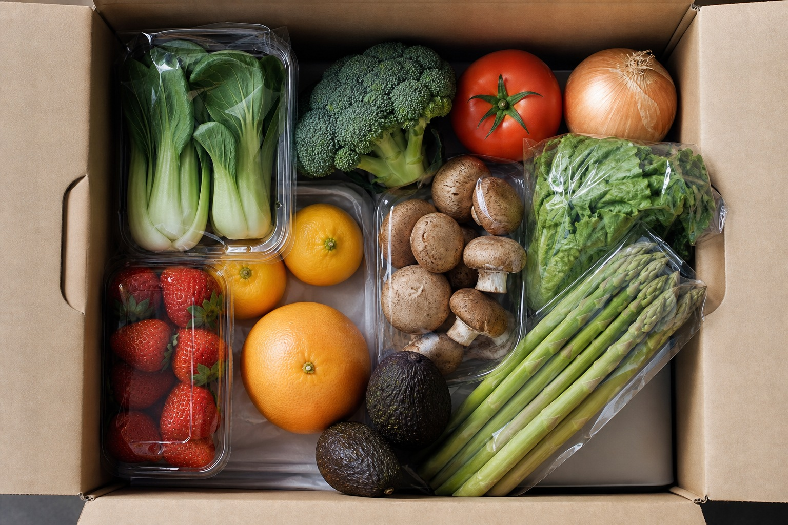

People & Culture
새벽을 만드는 47명
새벽상점은 물류·개발·MD·CS 네 개 본부, 47명의 팀입니다. 좋은 데이터 뒤에는 그 데이터를 만든 사람들이 있습니다.
§1
대표 인사

2021년 겨울, 저는 ‘새벽에 도착하는 신선함’이라는 한 문장으로 이 회사를 시작했습니다. 그 문장을 지키는 일이 생각보다 훨씬 어렵다는 것을, 지난 4년 동안 매일 배웠습니다.
2025년, 우리는 처음으로 수도권을 벗어나 부산과 대구의 새벽을 열었습니다. 숫자로 보면 412만 건의 배송이지만, 저에게는 412만 번의 약속을 지킨 하루하루였습니다. 다음 새벽에도 같은 마음으로 문 앞에 서겠습니다.
공동대표 · 정하람 — 前 물류 스타트업 운영총괄
§2
일하는 풍경


§3
우리가 지키는 네 가지
- 01
새벽은 협상하지 않는다
‘거의 새벽’은 새벽이 아닙니다. 도착 시간 약속은 어떤 이유로도 뒤로 미루지 않습니다.
- 02
숫자로 말하고, 사람으로 듣는다
모든 의사결정은 데이터로 검증하되, 클레임 한 건도 사람의 이야기로 끝까지 듣습니다.
- 03
산지와 오래 간다
가장 싼 산지가 아니라 가장 오래 함께 갈 산지를 고릅니다. 직계약이 신선도의 출발점입니다.
- 04
덜 버리는 쪽을 택한다
포장도 재고도, 편한 방법보다 덜 버리는 방법을 먼저 검토합니다. 새벽박스가 그 시작입니다.
§4
구성원 구성2025.12 기준 · 총 47명
막대 길이는 최다 직군(물류·배송 22명) 대비 상대 비율입니다.

